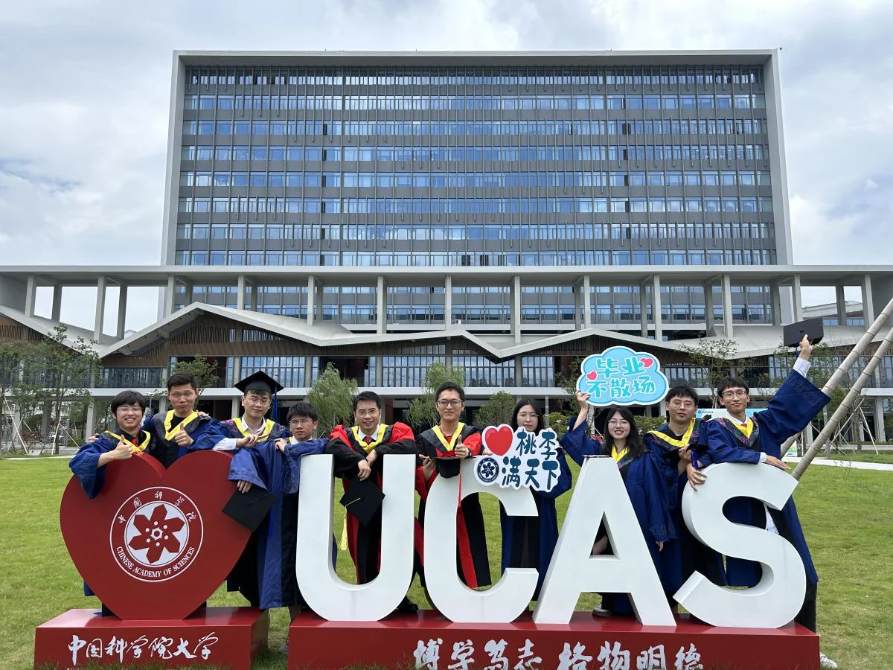

马煜辉的七年iMED路：感恩、成长与再启航
马煜辉
时光飞逝，自博士阶段加入iMED至今，转眼已近七载春秋。如今博后生涯即将画上句点，作为团队中的“老兵”，虽自认科研路上仍有不足，但回望在iMED的每一步足迹，皆历历在目，感慨万千。
与iMED的缘分，始于我在苏州大学读研的第三年。彼时我刚发表小论文，放弃硕博连读后陷入就业与申博的双重抉择，一度迷茫。恰逢此时，我注意到iMED团队深耕智能眼科影像领域——这与我硕士期间从事的眼科AI研究、以及在硕导公司的实习经历高度契合。尽管手握多个企业offer，我仍毅然选择追随内心对科研的热爱，最终顺利加入iMED，开启博士生涯。更要感谢赵一天老师，自刘江老师赴南科大后，是您接过了指导我的接力棒，在科研与生活中给予我无私关怀，这份恩情铭记于心。
初入iMED，在赵老师的建议下，我聚焦医学图像增强方向。起步颇为顺利，博士一年级便以第一作者身份在医学影像顶会MICCAI发表论文。此后由于团队需要开展OCTA血管分割研究，虽过程坎坷，却最终在顶级期刊IEEE TMI发表成果，并发布了首个公开的眼底OCTA血管分割数据集，为团队在该领域的影响力添砖加瓦。这一切成绩，离不开赵老师逐字推敲论文的耐心与精心指导。
科研之路从无坦途。在拓展MICCAI工作的过程中，我逐渐意识到：图像增强的视觉效果未必能提升下游任务性能，甚至生成对抗网络可能引入伪影干扰临床应用；若下游模型足够鲁棒，增强带来的增益亦有限。很长一段时间里，我对图像增强的价值产生怀疑，研究进展陷入停滞。尽管后续条纹伪影去除、图像复原等工作陆续发表，但我始终觉得这些成果不够完美。直到深入复盘才发现：图像增强的本质并非单纯优化视觉效果，而是通过消除低质量干扰、改善数据分布，为提升AI系统的泛化性与可靠性提供可能——保证AI系统整体可靠性，才是最终目标。
博士毕业后，我留组开展博后研究，试图从AI系统功能层面重新审视图像增强。我放弃了对单一图像增强任务的执着，转而将图像增强视为图像域泛化的特例，结合以噪声标签鲁棒学习为代表的标签域泛化，通过统一这两个方面的域泛化技术来探索提升AI系统可靠性的可行途径。
今天，我已申请到一个还算不错的教职，即将在新的岗位上继续深耕。临别之际，感谢赵老师始终如一的信任，感谢iMED家人们的陪伴与支持，是你们让我懂得：科研不是孤军奋战，而是在传承中突破，在协作中成长。我会带着iMED的文化烙印重新出发，在新的征程上把科研工作做实、做强，不负韶华，不负遇见。衷心祝愿iMED的明天更加辉煌，此去山高水长，归来仍是iMED人！
马煜辉
